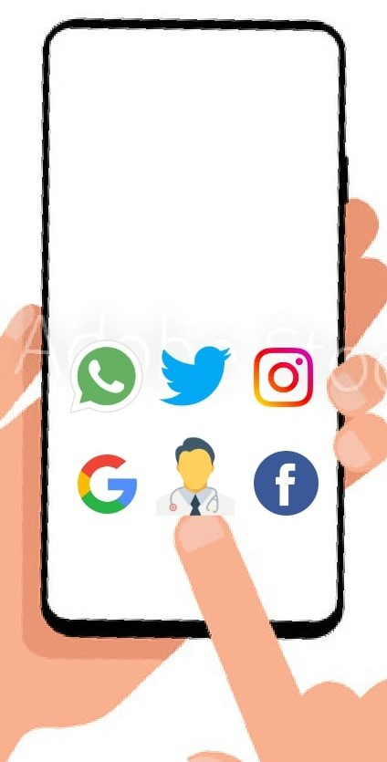
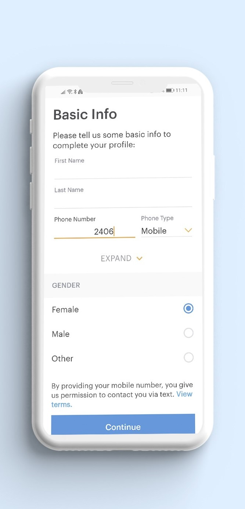
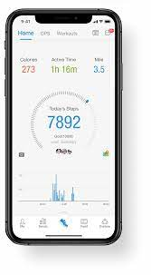
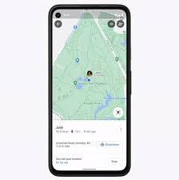

About Application
There is application that contains all information of patients medical history like last visit ,
symptoms ,given medicine and surgeries like this and whenever patients came for checkup they only have to give his patients no.
Or id to doctor and doctor get all medical history of patients and every time they came for check up or
anything doctor can update their record and for medicine. there are also facilitates for home delivery of medicine
Or patients have give only ID to pharmacy and they check their record and give medicine that updated.
And also you can arrange appointment to different doctor for different problems.
You can also pay fees of doctors or pharmacist or laboratory with there wallet or upi system.

About App
Login ::
The app should allow patient to create
and manage their profile and log in using their various social
media accounts. For doctors, profile modules allow showcasing
their specializations and practice that the patient will be able to
choose the relevant specialist.

DashBoard ::
The dashboard should also have user tracking
data, recovery progress, and there should be a visual
health record that either a doctor or a patient can
instantly pull up. The human brain retains information
better when it comes to a visual format, so bright, vivid
graphics should be present here. Look how colourful
and usable is the dashboard of Health application.
E-Insurance ::
Lifesurance is the place where you can claim your
health insurance instantly without waiting days of the
process. It provides a 24/7 support, payments via
online, easy to claim, and ensure you a 14-day guarantee
return funds if something went wrong.

Third-Party API or Custom API Integration
for Health Applications:
Through APIs, patients can control
their data. Hospitals can improve the usability of EHR
due to 3rd party integration. There’s also Box API, which
can be used for the storage of critical documents.
There’s Domixity API, which is for virtual connection
40
with the doctor, and Human API, which is for patients’
data management.
By applying custom API features in healthcare app, you
can sync data in the app with a website patient profile.
For example, you can integrate 3rd party services into
your app, such as Google Maps for the Pharmacies
navigator application. You can also integrate it with
“aarogya setu app” to aware about cases in area/city
and get necessary precaution .